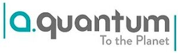

Trade Mark Journal No.2026/005 30 January 2026
WO0000001883450 (1,9,11,35,37,39,40,42)
Office of origin: Italy
Date of International Registration:10 June 2025
Date of designation in the UK:
10 June 2025

The mark consists of the wordings “a.Quantum” and “To the Planet”, arranged on two lines and in fancy characters.
The mark contains the colours tiffany green, light gray and dark grey.
International priority date claimed: 10 December 2024
(Italy)
(302024000184056)
- Class 1
- Chemicals for treating hazardous waste; unprocessed artificial resins, unprocessed plastics; chemicals for preserving foodstuffs; fertilizers; fire-extinguishing compositions; adhesives for use in industry; chemicals used in industry, science and photography, as well as in agriculture, horticulture and forestry; filtration control agents for completion fluids for subterranean wells; filtering materials [chemical, mineral, vegetable and other unprocessed materials]; chemical products for the treatment of drinking water; flocculating chemicals for treating waste and industrial process water; inorganic precipitation agents for the purification of waste water; chemicals for use in cleaning water; waste water treatment chemicals for industrial use; water-softening preparations; chemical compositions for water treatment; bacteria for waste water treatment.
- Class 9
- Downloadable mobile applications for data transmission; photovoltaic cells; electric power analyzers; converters, electric; energy control devices; voltage regulators for electric power; apparatus and instruments for accumulating electricity; thermal energy measuring apparatus; electric power controllers; apparatus and instruments for regulating electricity; electricity storage apparatus; downloadable publications; audio adaptors; optical receivers; virtual assistant software; communication, networking and social networking software; web application software; speech recognition apparatus; apparatus, instruments and cables for electricity; virtual reality models; downloadable podcasts; downloadable computer graphics; educational tablet applications; humanoid robots with artificial intelligence; data loggers and recorders; application-specific integrated circuits; measuring devices; downloadable mobile applications for the transmission of information; holographic images; sensors, detectors and monitoring instruments; pickups for telecommunication apparatus; computer software to enhance the audio-visual capabilities of multimedia applications, namely, for the integration of text, audio, graphics, still images and moving pictures; software for the planning, integration and optimization of smart city applications; talking books; cinematographic films; software for pay per click optimisation; software for the integration of artificial intelligence and machine learning in the field of big data; home automation systems; photovoltaic modules; photovoltaic inverters; multimedia apparatus and instruments; downloadable electronic publications in the nature of magazines; virtual reality software for education; application development software; data storage devices and media; virtual reality headsets; humanoid robots with artificial intelligence for use in scientific research; virtual reality software for telecommunications; downloadable mobile applications for the management of data; radio apparatus and instruments; apparatus and instruments for conducting the distribution of electricity; augmented reality software; communications equipment; facial recognition apparatus; downloadable mobile applications for use with wearable computer devices; weekly publications downloaded in electronic form from the Internet; virtual reality hardware; receiving terminals for signals; digital organizers; virtual reality software for simulation; electronic publications recorded on computer media; educational mobile applications; measuring, detecting, monitoring and controlling devices; signal cables for IT, AV and telecommunication; apparatus and instruments for controlling electricity; navigation, guidance, tracking, targeting and map making devices; optical encoders; application server software; electrical and electronic components; information technology and audio-visual, multimedia and photographic devices; software and applications for mobile devices; information retrieval applications; multimedia terminals; indicator lights for telecommunication apparatus; scientific research and laboratory apparatus, educational apparatus and simulators; downloadable postcards; photovoltaic apparatus for generating electricity; electronic databases recorded on computer media; testing and quality control devices; application software for social networking services via Internet; telephone ring tones [downloadable]; data processing equipment and accessories (electrical and mechanical); scanners for data processing; data gloves; water level indicators; electronic and magnetic ID cards for use in connection with payment for services; databases (electronic); office and business applications; virtual reality game software; application simulation software; magnetic encoders; radio-frequency identification (RFID) readers; downloadable electronic greeting cards for sending by regular mail; artificial intelligence software; wearable monitors; water leakage detection alarms; e-books; downloadable electronic maps; electricity mains apparatus; downloadable digital music; virtual reality [VR] motion simulators; application processors; virtual and augmented reality software; home automation devices; time programmers; downloadable electronic newsletters; downloadable mobile coupons; computer programs for accessing, browsing and searching online databases; encoding and decoding apparatus and instruments; safety, security, protection and signalling devices; virtual classroom software; computer software platforms for social networking; ultrahigh frequency translator apparatus; apparatus and instruments for accumulating and storing electricity; speech processors; label readers [decoders]; controllers and regulators; augmented reality software for use in mobile devices for integrating electronic data with real worl environments; magneto-optical pens; virtual reality glasses; water temperature gauges; downloadable mobile applications for the management of information; vehicle simulation software; collaboration management software platforms; batteries for electric vehicles; home automation software; detectors for electric meters; computer hardware for the dissemination of positioning data; counters; rechargeable electric batteries; enterprise software; computer hardware for routing audio, video, and digital signals; facial analysis software; fire detection software; gesture recognition software; media development software; computer hardware modules for use in electronic devices using the Internet of things [IoT]; instruments for distributing electrical current; charging appliances for rechargeable equipment; computer hardware; vehicle control assistance software; predictive maintenance software; computer software for wireless network communications; software platforms to allow users to collect money; computer software for use in remote meter reading; environmental monitoring software; cloud server software; electronic device software drivers that allow computer hardware and electronic devices to communicate with each other; computer hardware for the processing of positioning data; computer chatbot software for simulating conversations; meter testing apparatus; electronic meters; computer operating programs; artificial intelligence software for driverless cars; instruments for monitoring traffic; sensory software; computer software; electric-car charger; integrated electronic driver assistance systems for land vehicles; computer software platforms; electric current meters; computer software relating to the handling of financial transactions; computer hardware for the transmission of positioning data; reservation systems software; computer apparatus for remote meter reading; computer hardware for the collection of positioning data; hardware for electronic driving assistance systems; software for electronic driving assistance systems; computer hardware for the control of lighting; apparatus and instruments for switching the distribution of electricity; computer software for global positioning systems; machine control software; on-board electronic systems in land vehicles for providing driving assistance; electric batteries for powering electric vehicles; smart meters; robotic process automation [RPA] software; electrical engineering software; on board electronic systems for providing driving assistance; business process management [BPM] software; document management software; instruments for detecting traffic; real-time collaborative editing [RTCE] platforms [software]; Internet of things [IoT] range extenders [antennas]; artificial intelligence software for analysis; risk detection software; traffic control apparatus [electronic]; battery charging devices for motor vehicles; geographic information system [GIS] software; charging docks; computer software for analysing market information; apparatus for monitoring electrical energy consumption; image recognition software; apparatus and instruments for regulating the distribution of electricity; computer software for use in remote meter monitoring; Internet of things [IoT] sensors; charging stations for electric vehicles; speech recognition software; industrial automation software; biometric software; hardware for processing electronic payments to and from others; computer application software for use in implementing the Internet of things [IoT]; electronic article surveillance [EAS] software; machine learning software for surveillance; remote monitoring apparatus; monitoring control apparatus [electric]; acoustic alarms; communication software for connecting computer network users; communications networks; computer software to enable the provision of information via communications networks; electronic devices used to locate lost articles employing the global positioning system or cellular communication networks; accumulators, electric; nickel-cadmium storage batteries; accumulators for photovoltaic power; chargers for electric batteries; computers for autonomous-driving vehicles; vehicle drive training simulators; autonomous driving control systems for vehicles; computer applications for automatic vehicle driving control; simulators for training personnel in the driving of vehiclesv; vehicle automatic driving control devices; vehicle autonomous driving systems featuring interactive displaysv; photovoltaic apparatus for converting solar radiation to electrical energy; electrical power distribution blocks; solar panels for the production of electricity; apparatus and instruments for switching electricity; solar cells for electricity generation; solar energy collectors for electricity generation; energy regulators; apparatus and instruments for transforming electricity; electric control devices for energy management; electricity measuring instruments; electrical adapters; photovoltaic apparatus and installations for generating solar electricity; apparatus for controlling static electricity; distribution boxes [electricity]; distribution consoles [electricity]; branch boxes [electricity]; electricity conduits; distribution boards [electricity]; winding wires [electricity]; electricity indicators; armatures [electricity]; inductors [electricity]; circuit breakers; limiters [electricity]; inverters [electricity]; terminals [electricity]; control panels [electricity]; panels for the distribution of electricity; switch points [electric]; wire connectors [electricity]; junction boxes [electricity]; electrochemical gas sensors; gas detecting apparatus; residual gas analyzers; combustion gas detectors; gas mixers for laboratory use; gasometers [measuring instruments]; flue gas analyzers; gas flow monitors; gasifiers for laboratory use; gas testing instruments; gas flow meters; water meters; water temperature regulators; water level detection apparatus; electric loss indicators; solar powered radios; portable solar panels for generating electricity; solar powered telephones; solar-powered rechargeable batteries; advertising signboards [mechanical]; computer software for advertising; software for designing online advertising on websites; electronic advertising displays; machine learning software for advertising; illuminated advertisements; advertising signboards [luminous]; advertising display apparatus [mechanical or luminous]; software for embedding online advertising on websites.
- Class 11
- Heating installations; water dispensers; filters for use with lighting apparatus; lighting apparatus; settler apparatus for waste; waste disposal incinerators; thermal storage instruments [solar energy] for heating; hot water heaters; water mixing appliances; water coolers; filters for drinking water; hot water installations; hot water cylinders; hydrants; water cisterns; water supply installations; water conduits installations; water distribution installations; strainers for water lines; water cooling towers; water intake apparatus; drinking water supply apparatus; water purification, desalination and conditioning installations; induction water heaters; hot-water space heating apparatus [for industrial purposes]; spray units being parts of water supply installations; water distributor armatures for heating; air cleaning apparatus; ionization apparatus for the treatment of air or water; installations for the collection of gases; gas cleaners and purifiers; filters for gases [household or industrial installations]; flues and installations for conveying exhaust gases; regulating apparatus for gas installations; filters for cleaning gases [parts of household or industrial installations]; regulating apparatus for gas pipe installations; recuperators for pre-heating combustion air in heating systems by the use of hot flue gas; feed water heaters [for industrial purposes]; solar thermal collectors [heating]; heat pumps for energy processing; solar energy powered heating installations; solar powered ventilation apparatus; solar lamps; water filtering installations; water conditioning installations; fittings for the draining of water; chemical installations for conditioning drinking water; water filters [installations] for agricultural purposes; filter apparatus for water supply installations; water softening apparatus and installations; sanitary installations, water supply and sanitation equipment; installations for water treatment under osmotic process; cooling installations for gas; installations for the burning off of gases; industrial installations for filtering liquids; sewage treatment [purification] installations; launders for trapping impurities in molten metal; sewage disposal plants; gas purification installations; separators for scrubbing gas; smoke purifiers; regulating and safety accessories for gas apparatus; regulating and safety accessories for water apparatus; regulating accessories for water or gas apparatus and pipes; regulating and safety accessories for gas pipes; regulatory fittings for water pipes; pressure relief apparatus for use with gas installations; pressure relief apparatus forming part of water supply systems; pressure supervision apparatus [safety apparatus for gas pipes]; apparatus for controlling water supply; storage heaters; combined heating and air conditioning apparatus; electric space heaters; industrial ventilation apparatus; air heat recovery installations; terminal water supply fittings; air recirculating apparatus; appliances for water distribution [automatic]; air purgers for use with water distribution installations.
- Class 35
- Cost price analysis regarding waste disposal, removal, handling and recycling; water meter reading for billing purposes; online retail services for electric scooters; retail services for electric bicycles; online retail services for electric vehicles; retail services for electric vehicles; energy price comparison services; billing services in the field of energy; assistance and consultancy services in the field of business management of companies in the energy sector; advertising; gas meter reading for billing purposes; tracking and monitoring energy consumption for others for account auditing purposes; advertising the goods and services of online vendors via a searchable online guide; import-export agencies in the field of energy; provision and rental of advertising space, time and media; business assistance, management and administrative services; public relations services; development of market surveys; product demonstrations and product display services; sponsorship search; providing on-line auction services; development of promotional campaigns; production of television and radio advertisements; marketing; updating of advertising material; preparation of advertising material; preparation of publicity leaflets; advertising, marketing and promotional services; development of advertising concepts; dissemination of advertising for others via an on-line communications network on the internet; promotion services relating to esports events; providing marketing consulting in the field of social media; administration of incentive award programs to promote the sale of the goods and services of others; advertisement via mobile phone networks; internet marketing; blogger outreach services; updating of advertising information on a computer database; promotional marketing; event marketing; advertising services to promote public awareness of environmental matters; direct marketing; bill-posting; advertising and marketing services provided by means of social media; online advertising on a computer network; advertising, including on-line advertising on a computer network; advertising services relating to the travel industries; arranging and placing of advertisements; providing business information in the field of social media; advertising services to promote public awareness of the benefits of shopping locally; retail services in relation to non-alcoholic beverages; marketing services in the field of travel; distribution of advertising, marketing and promotional material; preparation of marketing plans; marketing agency services; on-line data processing services; brand positioning services; on-line promotion of computer networks and websites; preparation of publicity publications; arranging and conducting trade shows relating to publishing; business promotion; arranging promotion of charitable fundraising events; providing an on-line commercial information directory on the internet; business administration services for the processing of sales made on a global computer network; retail services in relation to electric vehicles; business advice and consultancy relating to franchising; advisory services (business -) relating to the establishment of franchises; transportation fleet (business management of -) [for others]; franchising services providing marketing assistance; providing business information via a web site; electricity meter reading for billing purposes; marketing services provided by means of digital networks; advice in the running of establishments as franchises; web site traffic optimization; management advisory services related to franchising; retail services in relation to electric bicycles; business management advisory services relating to industrial enterprises; utility meter reading for billing purposes; merchandising; business management advisory services relating to commercial enterprises; business organisation advice; water meter reading for billing purposes; business research and advisory services; administrative assistance in responding to calls for tenders; procurement of contracts concerning energy supply; business management services relating to the acquisition of businesses; advertising of business web sites; business research for new businesses; business management services relating to the development of businesses; web indexing for commercial or advertising purposes; business office services; promoting the goods and services of others via a global computer network; commercial information services provided by access to a computer database; promotion of special events; advertising and marketing services provided via communications channels; business intermediary services relating to the matching of potential private investors with entrepreneurs needing funding; corporate communications services; online advertising network matching services for connecting advertisers to websites; promotion of goods and services through sponsorship of sports events.
- Class 37
- Repair of water supply apparatus; installation of computer hardware; maintenance and repair services of computer hardware; installation of artificial intelligence software for surveillance; repair and maintenance of artificial intelligence software for surveillance; installation of machine learning software for surveillance; repair and maintenance of machine learning software for surveillance; installation of remote monitoring apparatus; repair and maintenance of remote monitoring apparatus; installation of electric monitoring control apparatus; repair and maintenance of electric monitoring control apparatus; installation of communication networks; repair and maintenance of communication networks; installation of communication software for connecting computer network users; repair and maintenance of communication software for connecting computer network users; installation of software enabling the transmission of electronic media via communications networks; repair and maintenance of software enabling the transmission of electronic media via communications networks; installation of software for the transmission of information via communications networks; repair and maintenance of software for the transmission of information via communications networks; installation of electronic devices for locating lost objects using global positioning systems or cellular communication networks; repair and maintenance of electronic devices for locating lost objects using global positioning systems or cellular communication networks; installation of electric accumulators; repair and maintenance of electric accumulators; installation of electric vehicle batteries; repair and maintenance of electric vehicle batteries; installation of electric vehicle charging stations; repair and maintenance of electric vehicle charging stations; installation of computers for autonomous vehicles; repair and maintenance of computers for autonomous vehicles; installation of vehicle driving training simulators; repair and maintenance of vehicle driving training simulators; installation of autonomous driving control systems for vehicles; installation and repair of pipelines; repair and maintenance of autonomous driving control systems for vehicles; installation and maintenance of photovoltaic installations; maintenance, repair and reconditioning of photovoltaic apparatus and installations; installation of residential solar panel power systems; installation of non-residential solar panel power systems; installation of water softeners; beneath ground construction work relating to gas supply pipes; beneath ground construction work relating to gas supply mains; natural gas refuelling service for motor vehicles; installation of pipe systems for conducting of gases; installation of plumbing, gas and water systems; construction of structures for the transportation of natural gas; construction of structures for the production of natural gas; construction of structures for the storage of natural gas; providing information relating to the repair or maintenance of water purifying apparatus; civil engineering maintenance involving the use of water-jet cutting equipment; repair of gas supply systems; cleaning of drains by high pressure water jetting; renovating services relating to conduits for water supply; electrical installation services; repair or maintenance of power distribution or control machines and apparatus; mechanical cleaning of waterways; cleaning of water supply plumbing; providing information relating to the repair or maintenance of gas water heaters; cleaning by water jetting (services for -); emergency servicing of apparatus for supplying electricity; installation of rainwater harvesting systems; installation of gas supply and distribution apparatus; repair or maintenance of water pollution control equipment; emergency servicing of water supply apparatus; repair of water purifying apparatus; installation of rainwater drainage systems; installation of rainwater collection systems; repair of water supply installations; emergency servicing of gas supply apparatus; installation of gas and water pipelines; installation of water supply apparatus; maintenance of water purifying apparatus; installation of rainwater tanks; maintenance and repair of gas and electricity installations; boring of water wells; repair of water supply apparatus; repair or maintenance of water purifying apparatus for industrial purposes; building, construction and demolition; plumbing installation, maintenance and repair; charging of electric vehicles; maintenance and repair of electric vehicles; installation of traffic management systems; repair of energy production plants and machines; maintenance and repair of solar power installations; maintenance and repair of solar heating installations; servicing of power generating apparatus and installations; maintenance of power generating apparatus and installations; installation of power generating apparatus; maintenance, servicing and repair of power generating apparatus and installations; installation of electric light and power systems; repair of power generating apparatus and installations; cleaning of water tanks; electric appliance installation and repair; installation and repair of telecommunications networks; heating equipment installation and repair; installation of pipelines; pipe laying; pipeline maintenance; services for the repair of pipelines; maintenance and repair of gas turbines; maintenance of water pollution control equipment; installation of solar powered systems; maintenance and repair of energy generating installations; repair of machines for treating organic waste; repair of industrial waste treatment machines; dismantling of industrial machinery; cleaning of industrial plant; installation of electric and electronic equipment in automobiles; installation of electrical and generating machinery; recharging of batteries; upgrading of computer hardware; maintenance of computer hardware; installation and repair of computer hardware; vehicle fueling services; installation and maintenance of hardware for computer networks and internet access; vehicle battery charging; vehicle service stations [refuelling and maintenance]; repair of energy supply installations; vehicle repair, maintenance, refuelling and recharging.
- Class 39
- Transport and storage of waste and recycling materials; provision of heating generated from waste, disposal of liquid waste; public utilities in the nature of supplying water; public utility services in the nature of electricity distribution; public utility services in the nature of natural gas distribution; electricity supply and distribution; transport of water by pipeline; water supplying; removal of waste; storage of waste; hire of waste storage containers; hire of waste handling containers; supply of electricity; packaging and storage of goods; information and advisory services in relation to the distribution of energy; providing information relating to the distribution of electricity; water distribution; arranging of sightseeing tours and excursions; route planning services; distribution of gas; consultancy services relating to the distribution of electricity; tourist travel reservation services; booking of transport via global computer networks; transport information, advice and reservation services; services for the supply of water by pipeline; reservation services for bus transportation; providing information to tourists relating to excursions and sightseeing; route planning [navigation services]; delivery of bottled water to homes and offices; arranging and booking of city sightseeing tours; supply of water by pipeline; providing taxi booking services via mobile applications; water distribution and supply; travel ticket reservation services; automobile rental reservation services; storage of water in tanks; distribution by pipeline and cable; vehicle parking and storage; transport services and trips for disabled persons; contract hire of motor vehicles; car rental; chauffeur driven car hire services; rental of electric cars; rental of cycles; motorcycle rental; rental of scooters for transportation purposes; motor land vehicle hire services; bicycle sharing services; carpooling services; vehicle location services; passenger vehicle hire; arranging of car hire; reservation services for vehicle rental; arranging the hire of all means of transport; hired car transport; electricity distribution; distribution of renewable energy; management of vehicular traffic flow through advanced communications network and technology; services for arranging transportation by road; gas supplying [distribution]; transmission of oil or gas through pipelines; supply [transport] of water through pipes; distribution of heat; electricity distribution via cables; distribution of electricity to households; distribution of energy for heating and cooling buildings; heat supplying [distribution]; providing information relating to water supplying services; leasing the use of power lines to third parties for the transmission of electricity; collection of sewage through public sewers; transportation of fluids by pipeline; pipeline transport of gases; transport of liquefied natural gas by sea; transport and distribution of natural gas and liquefied gas; marine transport of liquefied natural gas; storage of electricity; gas storage services; storage of liquefied natural gas on ships; supply [transport] of water for agricultural use; supply [transport] of water for industrial use; collection of industrial waste; land freight services; road transport services for passengers; advisory services relating to road transportation; providing information relating to bicycle rental services; arrangement of transportation; agency services for arranging the transportation of persons; transport services for the disabled; information services relating to traffic; arranging of passenger transportation services for others via an online application; storage of energy and fuels.
- Class 40
- Production of electrical power from renewable sources; consultancy services relating to the generation of electrical power; rental of equipment for the treatment and transformation of materials, for energy production and for custom manufacturing; sorting of waste and recyclable material [transformation; electricity generating; generation of electricity from solar energy; generation of electricity from wave energy; production of hydroelectric power; production of energy by power plants; generation of gas and electricity; information and advisory services relating to the generation of electricity from wave energy; water treatment and purification; rental of water treatment equipment; desalination of water; regeneration of water; demineralisation of water; water treatment [demineralising] services; providing information relating to the rental of water purifying apparatus; treatment of waste water in the field of environmental pollution control; waste and/or water treatment services; rental of water filtration units for commercial use; waste water treatment; purification of industrial waste water; treatment of waste water from industrial processes; generation of electricity from wind energy; rental of power-generating equipment; soil, waste or water treatment services [environmental remediation services]; leasing of water purification equipment; providing information relating to water treatment; energy production; production of energy by nuclear power plants; waste treatment [transformation]; treatment [transformation] of waste; treatment [reclamation] of industrial waste; leasing of energy generating equipment; generation of electrical power using carbon sequestration; destruction of waste; rental of waste crushing machines; waste incineration; upcycling [waste recycling]; recycling of waste; treatment of waste; extraction of minerals contained in waste residues; rental of electricity generators; waste disposal [treatment of waste]; treatment of hazardous waste; on-site water purification services; air and water conditioning and purification; recycling and waste treatment.
- Class 42
- Design and development of regenerative energy generation systems; drafting and development of photovoltaic systems; scientific research in the field of renewable energy; technological consulting services in the field of alternative energy generation; environmental testing services to detect contaminants in water water quality control services; consultancy relating to technological services in the field of power and energy supply; advisory services relating to the use of energy; development of energy and power management systems; technological analysis relating to energy and power needs of others; engineering services in the field of electrical power and natural gas production; engineering services for the gas industry; technical design and planning of pipelines for gas, water and waste water; technical design and planning of water purification plants; development of computer hardware and software; conducting research and technical project studies relating to the use of natural energy; technological consultancy in the fields of energy production and use: energy auditing; consultancy in the field of energy-saving; engineering services in the field of energy technology; professional consultancy relating to the conservation of energy; engineering services relating to gas transport and supply systems; design and development of energy distribution networks; design services relating to the creation of networks; intranet design, development and maintenance; environmental monitoring of waste treatment areas; design of equipment for the transportation of waste; research relating to waste analysis; scientific and industrial research; environmental monitoring of waste storage areas; scientific and industrial research in particular in the field of electricity; design and development of software for control, regulation and monitoring of solar energy systems; provision of information concerning research and technical project studies relating to the use of natural energy; exploration and searching of oil and gas; environmental testing of exhaust emissions; development of computer programs for analysis of exhaust gas emissions; water analysis; user authentication services using single sign-on technology for online software applications; cartography and mapping; scientific research relating to ecology; scientific and technological services; writing of computer programs for biotechnological applications; hosting of interactive applications; engineering services for applications on large and medium-sized computer systems; providing temporary use of non-downloadable software applications accessible via a web site; hosting of mobile applications; platforms for artificial intelligence as software as a service [SaaS]; computer programming; monitoring of water quality; programming of educational software; programming of multimedia equipment; hosting of computerized data, files, applications and information; providing artificial intelligence computer programs on data networks; technical support services relating to computer software and applications; research in the field of artificial intelligence technology; programming of web pages; analysis of stream water quality; advice and consultancy in relation to computer networking applications; design of virtual reality software; programming of multimedia applications; application service provider [ASP], namely, hosting computer software applications of others; hosting of multimedia applications; advisory services relating to the safety of the environment; IT services; computer software programming services; advisory services relating to planning applications; research in the field of environmental protection; design and development of virtual reality software; computer programming of video games; providing temporary use of on-line, non-downloadable software for use in publishing and printing: providing technological information about environmentally-conscious and green innovations; providing temporary use of web-based applications; creating electronically stored web pages for online services and the internet; programming of computer animations; research in the field of social media; design services; design and development of software in the field of mobile applications; testing, authentication and quality control; providing temporary use of on-line non-downloadable operating software for accessing and using a cloud computing network; providing information on computer technology and programming via a web site; information services relating to information technology; computer technology consultancy; design services for architecture; providing online, non-downloadable software; providing temporary use of non downloadable computer software; providing temporary use of on-line non-downloadable software for the management of data; providing temporary use of on-line non-downloadable software for the transmission of data; providing temporary use of on-line non-downloadable software for processing electronic payments; providing temporary use of online, non-downloadable computer software for use in broadcast monitoring applications; providing temporary use of non-downloadable computer software for tracking freight over computer networks, intranets and the internet; providing temporary use of non-downloadable software to enable content providers to track multimedia content; providing temporary use of non-downloadable software to enable sharing of multimedia content and comments among users; software design and development; development of computer software application solutions; computer software development for others; design and development of software for website development; research relating to the development of computer software; development of industrial machinery; industrial process research; design of industrial products; research relating to industrial machinery; development of industrial processes; design of industrial plant; web site design and creation services; remote computer backup services; town planning advisory services; industrial design; platforms for gaming as software as a service [SaaS]; advisory and consultancy services relating to the design and development of computer hardware; design and development of computer hardware; programming of software for information platforms on the internet; troubleshooting of computer hardware and software problems; computer security services in the nature of administering digital certificates; smartphone software design; urban planning; configuration of computer software; computer security services for protection against illegal network access; rental of meters for the recording of energy consumption; consultation services relating to computer hardware; software development, programming and implementation; computer hardware development; software customisation services; hosting web sites; hosting computer sites [web sites]; computer security consultancy; computer programming services for commercial analysis and reporting; design of computer hardware; scientific design services; technical design; writing of computer software; authentication services for computer security; computer website design; computer engineering consultancy services; programming of software for online advertising; platform as a service [PaaS] featuring software platforms for transmission of images, audio-visual content, video content and messages; rental of computer software; research on urban planning; testing of computer software; planning in relation to town planning and commercial town planning; computer network services; programming of software for e-commerce platforms; providing technical advice relating to computer hardware and software; creating and designing website-based indexes of information for others [information technology services]; research services; creating, designing and maintaining web sites; computer programming services for data warehousing; updating of smartphone software; updating of computer software; landscape lighting design; computer software design; conducting feasibility studies relating to computer hardware; architectural design for town planning; design and development of computer software architecture; website development services; designing websites for advertising purposes; IT security, protection and restoration; maintenance of computer software; IT consultancy, advisory and information services; outsource service providers in the field of information technology; maintenance of web sites; development of hardware for digital signal processing; industrial research; software development; research and development services; rental of computer hardware; consultancy and information services relating to computer programming; information technology [IT] consultancy; advisory services relating to computer software used for publishing; computer programming services for electronic data security; providing user authentication services using biometric hardware and software technology for e-commerce transactions; development of technologies for the protection of electronic networks.
a.Quantum S.p.A.
Representative: Avv. PAULILLO Leonardo, VIA ANDREA BAFILE 13, I-00195 ROMA, ITALY